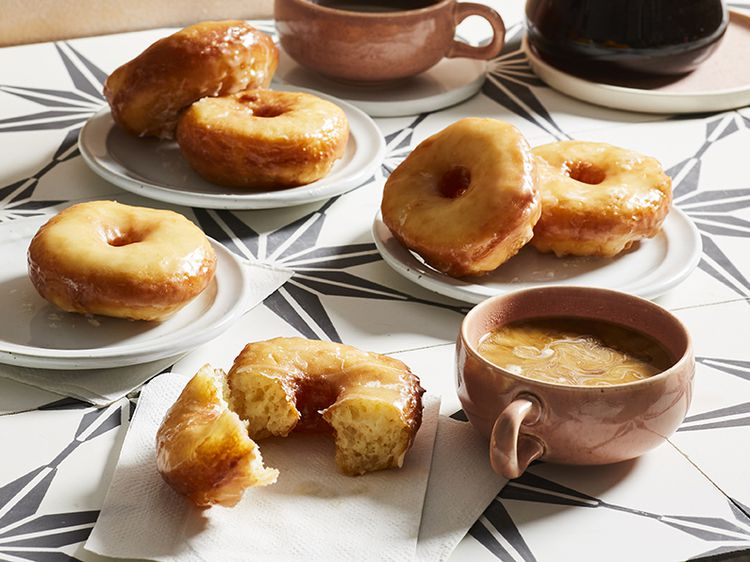
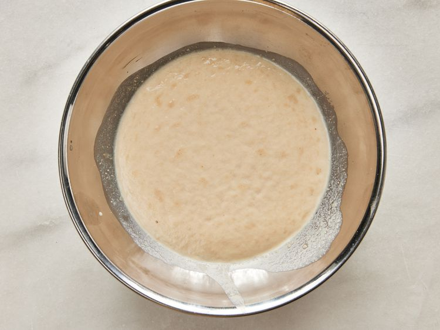
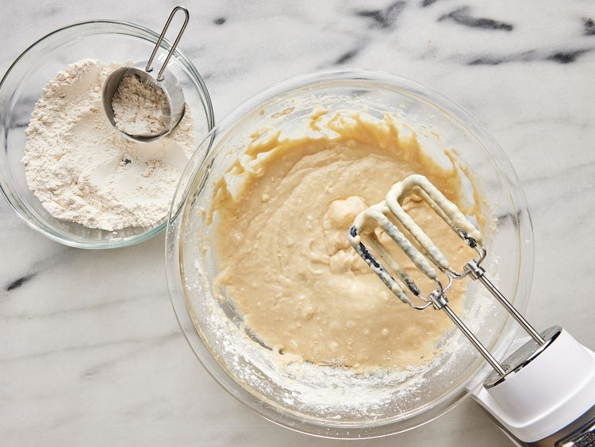
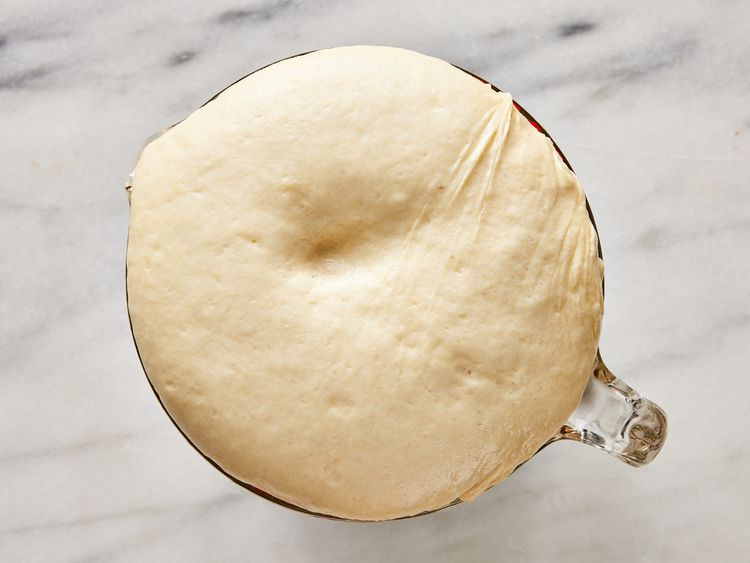
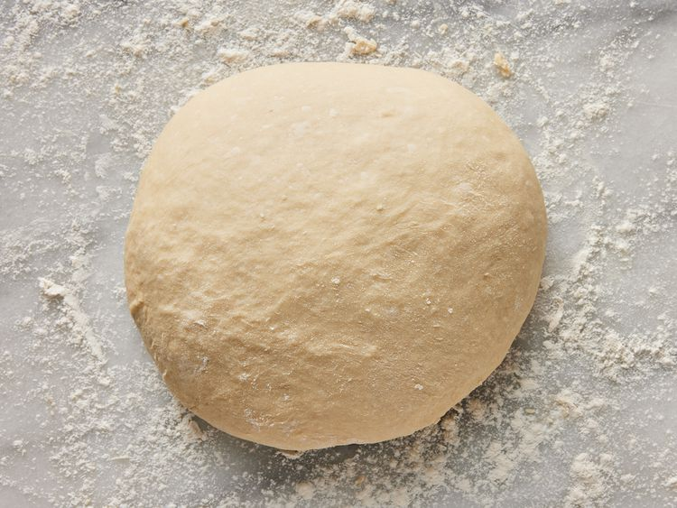
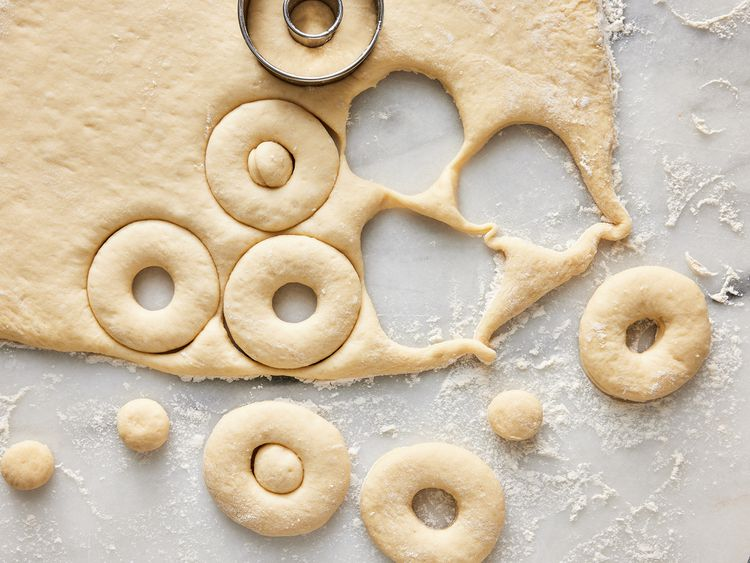
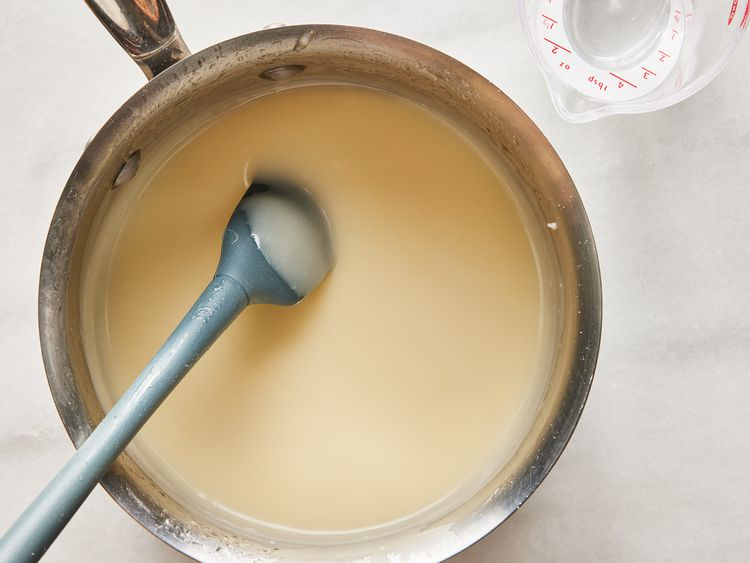
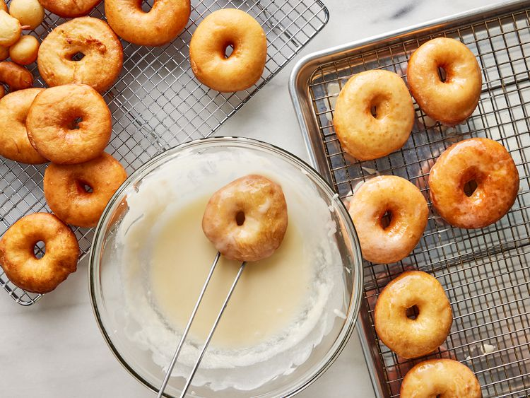
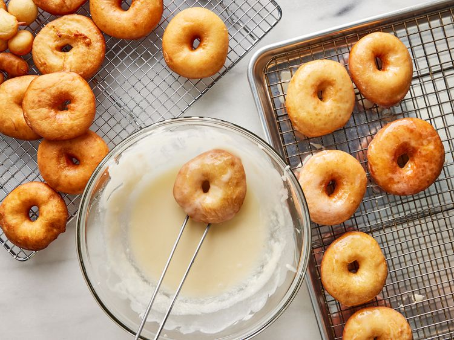
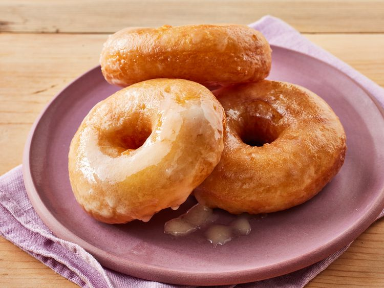

Crispy and Creamy Donuts

Description
What Is a Crispy and Creamy Donut?>
Homemade glazed doughnuts are the sweet, pillowy answer to "what's for dessert?"
This top-rated doughnut recipe boasts a light, buttery taste with a perfectly decadent glaze that's finger-licking good.
Learn how to make your own bakery-style treats right here.
Ingredients:
- Active Dry Yeast: 2 packs(.25 onces), preferably Envelope brand
- Cup of Water: ¼ (105 F° to 115 F°)
- Milk: 1½(lukewarm)
- Salt: 1 teaspoon
- Eggs: 2
- Shortening: ⅓ cup
- All-Purpose Flour: 5 cups
- Vegetable Oil: 1 quart(for frying)
- Butter: ⅓
- Sugar: 2 cups(Confectioner brand)
- Vanilla: 1½ teaspoons
- Hot Water: 4 tablespoons or as needed
How to Make Crispy and Creamy Step-by-Step:
Here's a very brief overview of what you can expect when you make Crispy and Creamy Donuts at home:
- Sprinkle the yeast over the warm water, and let stand for 5 minutes, or until foamy.

- In a large bowl, mix together the yeast mixture, milk, sugar, salt, eggs, shortening, and 2 cups of the flour.
Mix for a few minutes at low speed, or stirring with a wooden spoon.
Beat in remaining flour 1/2 cup at a time, until the dough no longer sticks to the bowl.
Knead for about 5 minutes, or until smooth and elastic.
Place the dough into a greased bowl, and cover.
Set in a warm place to rise until double.
Dough is ready if you touch it, and the indention remains.


- Turn the dough out onto a floured surface, and gently roll out to 1/2 inch thickness.
Cut with a floured doughnut cutter.
Let doughnuts sit out to rise again until double.
Cover loosely with a cloth.


- Melt butter in a saucepan over medium heat.
Stir in confectioners' sugar and vanilla until smooth.
Remove from heat, and stir in hot water one tablespoon at a time until the icing is somewhat thin, but not watery.
Set aside.

- Heat oil in a deep-fryer or large heavy skillet to 350 F° (175 C°).
Slide doughnuts into the hot oil using a wide spatula.
Turn doughnuts over as they rise to the surface.
Fry doughnuts on each side until golden brown.
Remove from hot oil, to drain on a wire rack.
Dip doughnuts into the glaze while still hot, and set onto wire racks to drain off excess.
Keep a cookie sheet or tray under racks for easier clean up.
 

- Enjoy!

Tip: We have determined the nutritional value of oil for frying based on a retention value of 10% after cooking.
The exact amount may vary depending on cook time and temperature, ingredient density, and the specific type of oil used.